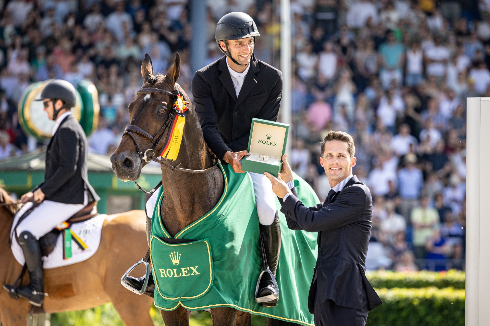

Aachen abre la temporada con un TSCHIO excepcional en mayo y un Rolex Grand Prix el domingo
La organización del CHIO Aachen ha programado entre el viernes 22 y el domingo 24 de mayo un TSCHIO con formato propio centrado en el salto. La edición es excepcional dentro del calendario habitual del recinto, que reservaba sus grandes citas para julio: el desplazamiento al inicio del verano se debe a que el CHIO…

Foto: chioaachen.de
La organización del CHIO Aachen ha programado entre el viernes 22 y el domingo 24 de mayo un TSCHIO con formato propio centrado en el salto. La edición es excepcional dentro del calendario habitual del recinto, que reservaba sus grandes citas para julio: el desplazamiento al inicio del verano se debe a que el CHIO clásico no se celebra en 2026 al estar la sede ocupada por el Campeonato del Mundo de agosto, y la próxima edición regular volverá en 2027.
El programa deportivo se articula en torno a tres jornadas. El viernes 22 abre con el Premio de Soers a 1,45 metros, las pruebas Youngster-Tour para caballos de 7 y 8 años y el primer clasificatorio para el Rolex Grand Prix. El sábado 23 incluye el segundo clasificatorio, una prueba Youngster-Tour adicional y la MERKUR CASINO-Cup que combina salto y enganches. El domingo 24 se disputa el Rolex Grand Prix, con cuarenta jinetes, dos rondas y desempate sobre obstáculos a 1,60 metros, prueba que forma parte del Rolex Grand Slam of Show Jumping.
El TSCHIO mantiene también dos elementos identitarios de Aachen: el concierto "Horse & Symphony" del sábado, con la Orquesta Sinfónica de Aachen interpretando partituras de la saga James Bond, y el "Farewell of Nations" del domingo, ceremonia de clausura que se celebra ininterrumpidamente desde 1953.
La temporada principal del recinto vendrá tres meses después con el Campeonato del Mundo del 11 al 23 de agosto, que reunirá las seis disciplinas FEI olímpicas y para-ecuestre en las pistas de Soers.
— Redacción de Hípica al Día